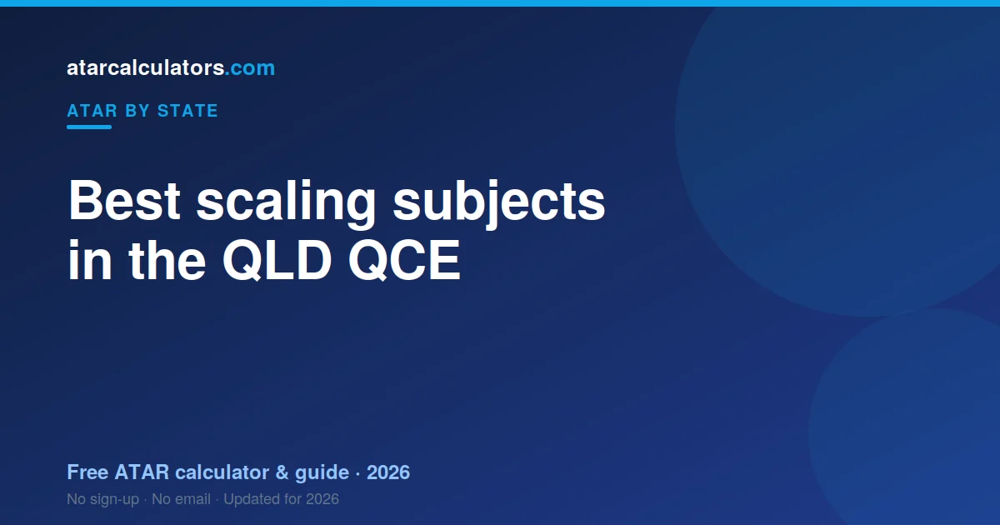

In the QLD QCE, the highest-scaling subjects are usually Specialist Mathematics, Chemistry, Physics and Mathematical Methods. A subject scales up because the students taking it are strong across all their subjects, not because the content is hard. Choosing a high-scaling subject only helps if you can score well in it.
Key takeaways
- The highest-scaling QCE subjects are usually Specialist Maths, Chemistry, Physics and Maths Methods.
- A subject scales up because its cohort is strong, not because it is hard.
- Broad-entry subjects tend to scale lower.
- Your result position is what scaling rewards, not the subject name.
- A strong result in any subject beats a weak one in a high-scaling subject.
- Choose subjects you can do well in and stay motivated for.

How QCE scaling works
QTAC scales every QCE subject so that a result in one is worth the same as the same result in another. It does this by looking at how the students in a subject perform across all of their subjects.
If a subject’s students are strong overall, the subject scales up. If the group is broader, it scales down. Your own position within the subject never changes.
The highest-scaling QCE subjects
Year after year, the same subjects sit near the top. Specialist Mathematics scales strongly. So do Chemistry and Physics. Mathematical Methods also scales up. High-level languages scale well too, because their cohorts are small and strong.
These subjects share one thing: the students who take them tend to do well across their whole QCE. That is what lifts the scaling, not the difficulty itself.
Subjects that scale lower
Broad-entry subjects, and many Applied subjects, tend to scale lower. This does not make them bad choices.
A subject that scales lower can still contribute a strong scaled result if you rank near the top of it. Scaling lowers the whole subject, but your position within it still counts.
Why hard does not mean high-scaling
It is a myth that difficult subjects automatically scale up. Scaling reflects the strength of the cohort, not the content. A subject could feel hard and still scale modestly if its students are mixed in ability.
So do not choose a subject just because it has a tough reputation. Choose it because strong students take it and you can be one of them.
Should you choose for scaling or for results?
For results, almost always. Scaling only rewards your position in the cohort. If you pick a high-scaling subject you are weak in, you rank low and gain nothing from the scaling.
A strong result in a subject you enjoy beats a weak result in a high-scaling one. Motivation and ability matter more than the scaling table.
The English question
You must complete an English subject to be eligible for an ATAR. There are a few English options, and General English tends to draw a stronger cohort than the alternatives.
But the same rule applies: take the English subject you can do best in. A strong result in one beats a weak result in another. Choose the one that matches your ability.
Estimate your QLD ATAR
Rather than guess how subjects scale, see how your own results land. Our QLD ATAR calculator applies scaling to your subject results and gives you an estimated ATAR.
Try a few subject combinations. Seeing the real effect on your ATAR is far more useful than a rumoured “best subjects” list.
The top-scaling QLD subjects in detail
A few subjects sit near the top of the scaling every year. Specialist Mathematics scales strongly, as do Chemistry and Physics. Mathematical Methods scales well too. High-level languages scale highly, because their cohorts are small and strong.
What links them is not difficulty for its own sake, but the strength of the students who take them. Strong cohorts lift a subject’s scaling. That is the pattern behind every high-scaling subject.
The English options compared
You must complete an English subject to be eligible for an ATAR. Queensland offers a few English options, and General English tends to draw a stronger cohort than the alternatives, so it scales a little better on average.
Still, take the English you can do best in. A strong result in one English subject can beat a weak result in another once scaling is applied. Match the subject to your ability, not just the scaling.
Do sciences scale better than humanities?
Often, but not always, and not because of the subject type itself. Sciences and higher maths tend to draw strong cohorts, which lifts their scaling. Some humanities scale well too, for the same reason.
So it is not “sciences good, humanities bad”. It is about cohort strength. A humanities subject with a strong cohort can out-scale a science with a broader one.
A smarter way to choose subjects
Rather than chase the scaling table, start from your strengths. List the subjects you enjoy and perform well in, then check how they scale. Often some of your strong subjects already scale well.
Then add one high-scaling subject only if you can genuinely do well in it. This gives you the best of both: strong results and reasonable scaling, without gambling on a subject you dislike.
Scaling shifts slightly each year
Scaling is recalculated every year, based on that year’s cohorts. So a subject’s scaling can move a little from one year to the next. The broad pattern is stable, but the exact figures shift.
This is another reason not to pick subjects purely on last year’s scaling. Choose for your strengths and interest, and treat scaling as a minor tiebreaker rather than the deciding factor.
A note on subject prerequisites
Scaling is not the only thing to weigh when choosing subjects. Some university courses require specific subjects as prerequisites. Taking a high-scaling subject is little use if it leaves you without a prerequisite for your goal course.
So check the prerequisites for the courses you might want, then choose subjects that both suit your strengths and keep your options open. Scaling comes after those two.
Higher maths and scaling
The maths subjects show scaling clearly. Specialist Mathematics scales strongly, and Mathematical Methods scales well too, because both draw capable cohorts. General Mathematics scales lower, as it is a broader subject.
If you are strong at maths, the higher maths subjects can lift your best five. But the usual rule holds: only take them if you can score well. A strong Methods result beats a weak Specialist one.
The takeaway on scaling
Scaling rewards how you perform within a subject, not the subject’s name. So the winning move is to pick subjects you can excel in, check they scale reasonably, and add one high-scaling subject only if you can do well in it.
Do not gamble on a tough, high-scaling subject you dislike. A strong result in a subject that suits you will almost always serve your ATAR better.
Common questions
What are the best-scaling subjects in QLD?
The highest-scaling QCE subjects are usually Specialist Mathematics, Chemistry, Physics and Mathematical Methods, along with high-level languages. They scale up because their cohorts are strong across all subjects.
Do hard subjects always scale up?
No. Scaling reflects how strong the students in a subject are, not how difficult the content is. A hard subject with a mixed cohort can scale modestly.
Which subjects scale down in QLD?
Broad-entry subjects and many Applied subjects tend to scale lower. You can still get a strong scaled result by ranking near the top of them.
Should I choose subjects for scaling or for marks?
For marks. Scaling only rewards your position in the cohort, so a strong result in a subject you are good at beats a weak result in a high-scaling one you struggle with.
Which subjects scale highest in QLD?
Specialist Mathematics, Chemistry, Physics and Mathematical Methods consistently scale well, along with high-level languages. They scale strongly because their cohorts are strong across all subjects.
Do I have to take English for a QLD ATAR?
Yes. You must complete an English subject and meet a literacy standard to be eligible for an ATAR. Your English result only counts towards your ATAR if it is among your best five.